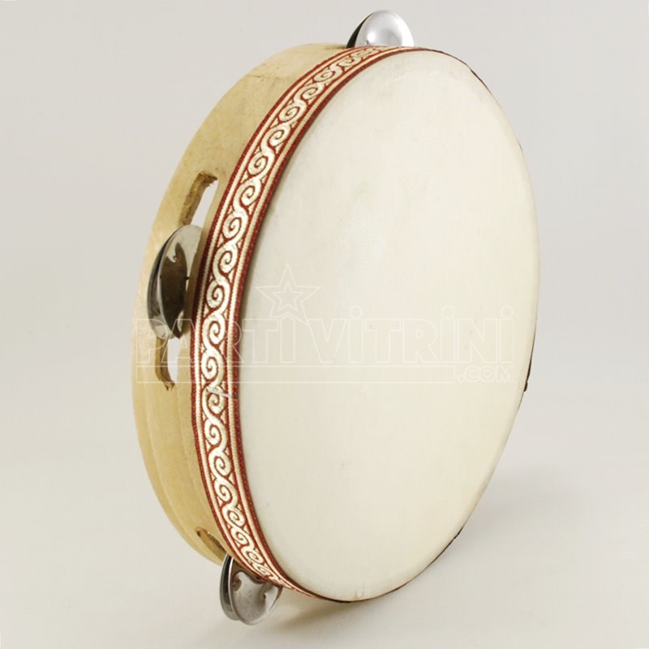
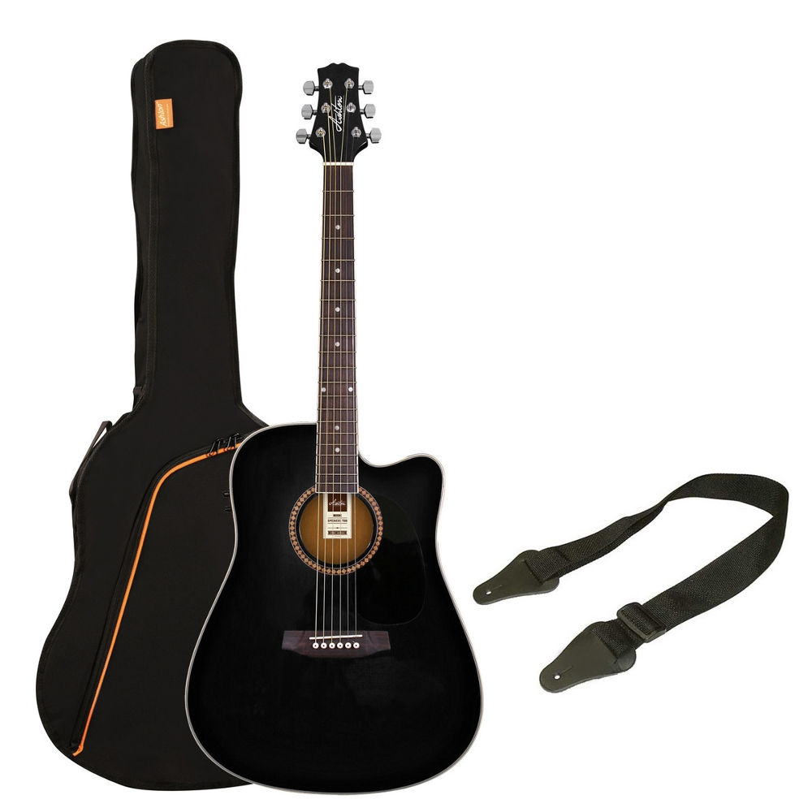
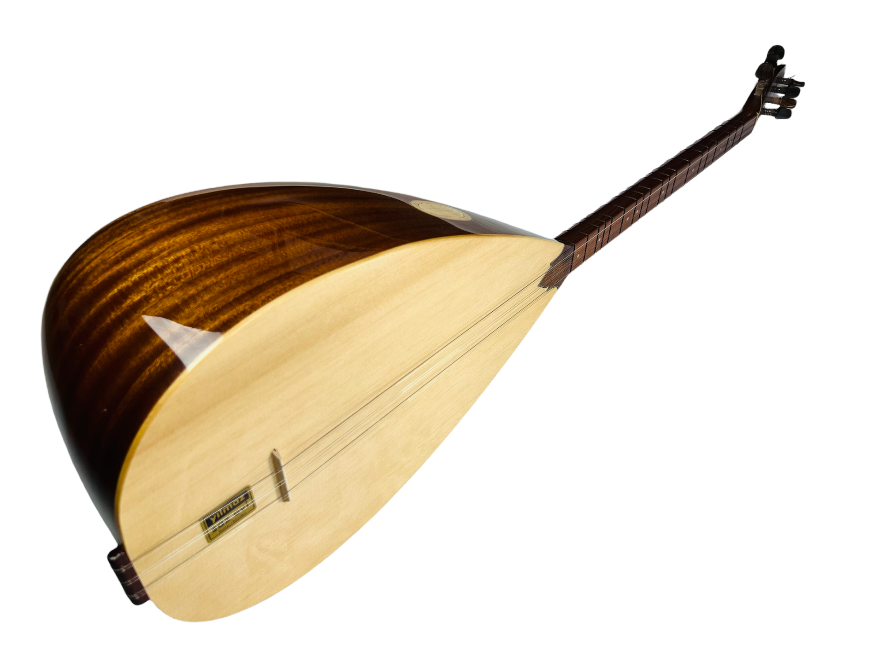
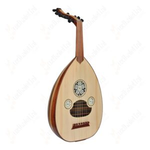
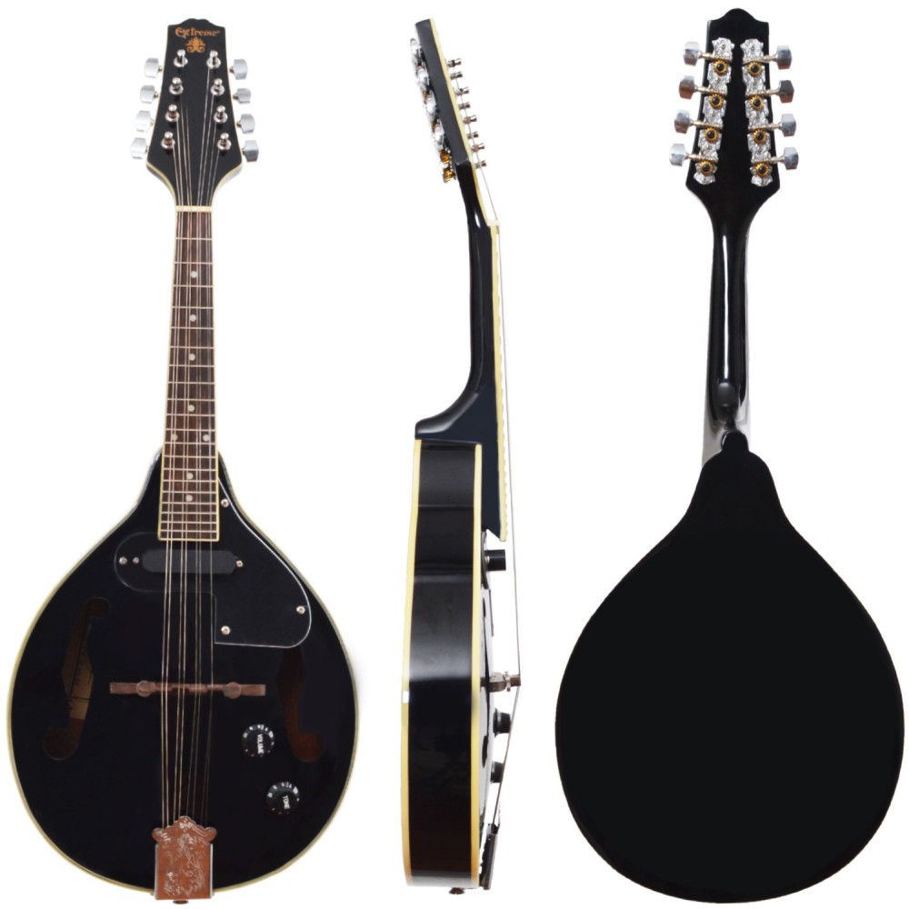
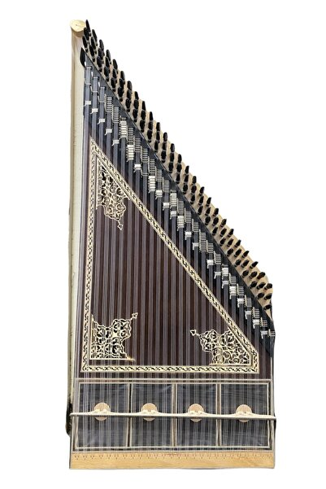

Vurmalı Müzik Aletleri:
- Davul
- Darbuka
- Bateri
- Tef
Davul Türk ve dünya kültüründe binlerce yıldır kullanılan vurmalı çalgılar arasında yer almaktadır. Davulun şekli zaman içerisinde farklı kültürler tarafından değişmiştir. Fakat insanlar davulu aynı amaçla müzik yapımında kullanmaktadır. Davul genellikle tokmakla çalınmaktadır. Elle çalınan versiyonları da bulunmaktadır. Gövdesi genellikle ahşaptan yapılır. Çeşitli madenlerden ve topraktan yapılan versiyonları da mevcuttur.

Eğlence amacıyla yapılan kutlamalarda darbuka kullanılır. Elle çalınan bu vurmalı müzik aletinin gövdesi çeşitli malzemelerden yapılabilir. Elle çalınan bu müzik aleti, düğünler ve sünnet düğünlerinde eğlenceli müzik yapmayı sağlar.

Bateride beş adet davul ve üç adet zil bulunmaktadır. Bateri çalarken dengeli ses çıkarmak için dikkat etmek önemlidir. Çünkü dikkatli olunmadığında gürültülü sesler ortaya çıkabilir. Bateriyi çalmak için kullanılan alete baget denmektedir.

Tef vurmalı müzik aleti, Türk kültüründe ve Arap müziklerinde yer almıştır. Bir kasnak üzerine gerilmiş hayvan derisi ile yapılır. Kasnağın etrafında küçük ziller bulunmaktadır. Parmak ve el yardımıyla çalınır. Eğlenceli kutlamalarda kullanılan vurmalı çalgılar arasındadır.
Telli Çalgılar
- Gitar
- Akustik Gitar 
- Elektro Gitar
- Bas Gitar
- Bağlama
- Ut
- Mandolin
- Kanun
Gitar bir telli çalgı olarak sınıflandırılır - yani ses, iki sabit nokta arasında gerilmiş titreşen bir tel tarafından üretilir.


Bağlama ya da saz, Türk halk müziğinde yaygın olarak kullanılan telli tezeneli bir çalgı türüdür. Tezene denilen kiraz ağacı kabuğundan yapılmış bir mızrapla tellere vurularak çalınır. Tekne bir kütükten oyulmuştur ve armut biçimindedir.
Perdesiz bir çalgı olan ut, telli ve mızraplı çalgılar kategorisinde yer almaktadır. 3 oktavlık bir ses aralığına sahip olan ut, 11 ya da 12 telli olarak kullanılır. Tel gruplamalarında 6 grup tel bulunmaktadır ve en üstte bulunan bam teli tekli olarak kullanıldığı durumlarda 11, çiftli kullanıldığında ise 12 tellidir. En üstte bulunan bam teli Türk Müziğinde kaba dügah olarak adlandırılan kalın la sesine akort edilir ve genelde dem maksatlı olarak kullanılır.
Mandolin, uta benzeyen telli çalgıdır. Mızrapla çalındığı zaman iyi ses verdiği bilinir ancak modern mandolinlerde genelde pena kullanılmaktadır. Mızrap ile çalınabilmesi mandolini ut ve gitardan ayırır. Dört çift teli olan mandolinin ses düzeni kemandaki gibidir. Kolay öğrenilir olması nedeniyle müzikle yeni tanışanların tercih ettiği bir müzik aletidir.
Ortadoğu ülkelerinde ve özellikle Türkiye’de orkestraların vazgeçilmezi olan, telli çalgılar grubunda yer alan, hoş bir sese ve tını’ya sahip enstrümandır. Tarihe bakıldığında Kanun’dan daha hoş seslere sahip telli çalgılar mevcuttur. Özellikle Mısır Uygarlığı ve Sümerliler bu isimler arasında yer almaktadır. Rivayet’e göre; Ünlü bilgin Farabi‘nin telli çalgılardan yola çıkarak Kanun’u ortaya çıkardığı söylenmektedir.
